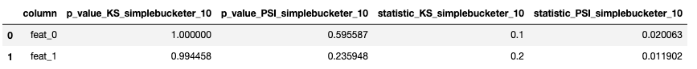

Statistical Tests¶
This module allows us to apply different statistical tests.
AutoDist
¶
Class to automatically apply all implemented statistical distribution tests and binning strategies.
to (a selection of) features in two dataframes.
Examples:
import numpy as np
import pandas as pd
from probatus.stat_tests import AutoDist
df1 = pd.DataFrame(np.random.normal(size=(1000, 2)), columns=['feat_0', 'feat_1'])
df2 = pd.DataFrame(np.random.normal(size=(1000, 2)), columns=['feat_0', 'feat_1'])
myAutoDist = AutoDist(statistical_tests=["KS", "PSI"], binning_strategies='simplebucketer', bin_count=10)
myAutoDist.compute(df1, df2, column_names=df1.columns)

__init__(self, statistical_tests='all', binning_strategies='default', bin_count=10)
special
¶
Initializes the class.
Parameters:
| Name | Type | Description | Default |
|---|---|---|---|
statistical_tests |
str |
Statistical tests to apply, either list of tests names, or 'all'. Statistical methods implemented:
|
'all' |
binning_strategies |
str |
Binning strategies to apply for each test, either list of tests names, 'all' or 'default'. Binning strategies that can be chosen:
|
'default' |
bin_count |
integer, None or list of integers |
bin_count value(s) to be used, note that None can only be used when no bucketing strategy is applied. |
10 |
Source code in probatus/stat_tests/distribution_statistics.py
def __init__(self, statistical_tests="all", binning_strategies="default", bin_count=10):
"""
Initializes the class.
Args:
statistical_tests (str, optional): Statistical tests to apply, either list of tests names, or 'all'.
Statistical methods implemented:
- `'ES'`: Epps-Singleton,
- `'KS'`: Kolmogorov-Smirnov statistic,
- `'PSI'`: Population Stability Index,
- `'AD'`: Anderson-Darling TS.
binning_strategies (str, optional): Binning strategies to apply for each test, either list of tests names,
'all' or 'default'. Binning strategies that can be chosen:
- `'SimpleBucketer'`: equally spaced bins,
- `'AgglomerativeBucketer'`: binning by applying the Scikit-learn implementation of Agglomerative
Clustering,
- `'QuantileBucketer'`: bins with equal number of elements,
- `None`: no binning is applied. Note that not all statistical tests will be performed since some of
them require binning strategies.
- `'default'`: applies a default binning for a given stats_test. For all tests appart from PSI, no
binning (None) is used. For PSI by default quantilebucketer is used.
- `'all'`: each binning strategy is used for each statistical test
bin_count (integer, None or list of integers, optional):
bin_count value(s) to be used, note that None can only be used when no bucketing strategy is applied.
"""
self.fitted = False
# Initialize statistical tests to be performed
if statistical_tests == "all":
self.statistical_tests = list(DistributionStatistics.statistical_test_dict.keys())
elif isinstance(statistical_tests, str):
self.statistical_tests = [statistical_tests]
else:
self.statistical_tests = statistical_tests
# Initialize binning strategies to be used
if binning_strategies == "all":
self.binning_strategies = list(DistributionStatistics.binning_strategy_dict.keys())
elif isinstance(binning_strategies, str):
self.binning_strategies = [binning_strategies]
elif binning_strategies is None:
self.binning_strategies = [None]
else:
self.binning_strategies = binning_strategies
if not isinstance(bin_count, list):
self.bin_count = [bin_count]
else:
self.bin_count = bin_count
compute(self, df1, df2, column_names=None, return_failed_tests=True, suppress_warnings=False)
¶
Fit the AutoDist object to data; i.e. apply the statistical tests and binning strategies.
Parameters:
| Name | Type | Description | Default |
|---|---|---|---|
df1 |
pd.DataFrame |
dataframe 1 for distribution comparison with dataframe 2. |
required |
df2 |
pd.DataFrame |
dataframe 2 for distribution comparison with dataframe 1. |
required |
column_names |
list of str |
list of columns in df1 and df2 that should be compared. If None, all column names will be compared |
None |
return_failed_tests |
bool |
remove tests in result that did not succeed. |
True |
suppress_warnings |
bool |
whether to suppress warnings during the fit process. |
False |
Returns:
| Type | Description |
|---|---|
(pd.DataFrame) |
dataframe with results of the performed statistical tests and binning strategies. |
Source code in probatus/stat_tests/distribution_statistics.py
def compute(
self,
df1,
df2,
column_names=None,
return_failed_tests=True,
suppress_warnings=False,
):
"""
Fit the AutoDist object to data; i.e. apply the statistical tests and binning strategies.
Args:
df1 (pd.DataFrame):
dataframe 1 for distribution comparison with dataframe 2.
df2 (pd.DataFrame):
dataframe 2 for distribution comparison with dataframe 1.
column_names (list of str, optional):
list of columns in df1 and df2 that should be compared. If None, all column names will be compared
return_failed_tests (bool, optional):
remove tests in result that did not succeed.
suppress_warnings (bool, optional):
whether to suppress warnings during the fit process.
Returns:
(pd.DataFrame):
dataframe with results of the performed statistical tests and binning strategies.
"""
if column_names is None:
column_names = df1.columns.to_list()
if len(set(column_names) - set(df2.columns)):
raise Exception("column_names was set to None but columns in provided dataframes are different")
# Check if all columns in column_names are in df1 and df2
elif len(set(column_names) - set(df1.columns)) or len(set(column_names) - set(df2.columns)):
raise Exception("Not all columns in `column_names` are in the provided dataframes")
# Calculate statistics and p-values for all combinations
result_all = pd.DataFrame()
for col, stat_test, bin_strat, bins in tqdm(
list(
itertools.product(
column_names,
self.statistical_tests,
self.binning_strategies,
self.bin_count,
)
)
):
if self.binning_strategies == ["default"]:
bin_strat = DistributionStatistics.statistical_test_dict[stat_test]["default_binning"]
dist = DistributionStatistics(statistical_test=stat_test, binning_strategy=bin_strat, bin_count=bins)
try:
if suppress_warnings:
warnings.filterwarnings("ignore")
_ = dist.compute(df1[col], df2[col])
if suppress_warnings:
warnings.filterwarnings("default")
statistic = dist.statistic
p_value = dist.p_value
except Exception:
statistic, p_value = "an error occurred", None
pass
# Append result to results list
result_ = {
"column": col,
"statistical_test": stat_test,
"binning_strategy": bin_strat,
"bin_count": bins,
"statistic": statistic,
"p_value": p_value,
}
result_all = result_all.append(result_, ignore_index=True)
if not return_failed_tests:
result_all = result_all[result_all["statistic"] != "an error occurred"]
self.fitted = True
self._result = result_all[
[
"column",
"statistical_test",
"binning_strategy",
"bin_count",
"statistic",
"p_value",
]
]
self._result["bin_count"] = self._result["bin_count"].astype(int)
self._result.loc[self._result["binning_strategy"].isnull(), "bin_count"] = 0
self._result.loc[self._result["binning_strategy"].isnull(), "binning_strategy"] = "no_bucketing"
# Remove duplicates that appear if multiple bin numbers are passed, and binning strategy None
self._result = self._result.drop_duplicates(
subset=["column", "statistical_test", "binning_strategy", "bin_count"],
keep="first",
)
# create pivot table as final output
self.result = pd.pivot_table(
self._result,
values=["statistic", "p_value"],
index="column",
columns=["statistical_test", "binning_strategy", "bin_count"],
aggfunc="sum",
)
# flatten multi-index
self.result.columns = ["_".join([str(x) for x in line]) for line in self.result.columns.values]
self.result.reset_index(inplace=True)
return self.result
DistributionStatistics
¶
Wrapper that applies a statistical method to compare two distributions.
Depending on a test, one can also apply binning of the data.
Examples:
import numpy as np
import pandas as pd
from probatus.stat_tests import DistributionStatistics
d1 = np.histogram(np.random.normal(size=1000), 10)[0]
d2 = np.histogram(np.random.normal(size=1000), 10)[0]
myTest = DistributionStatistics('KS', bin_count=10)
test_statistic, p_value = myTest.compute(d1, d2, verbose=True)
__init__(self, statistical_test, binning_strategy='default', bin_count=10)
special
¶
Initializes the class.
Parameters:
| Name | Type | Description | Default |
|---|---|---|---|
statistical_test |
string |
Statistical method to apply, statistical methods implemented:
|
required |
binning_strategy |
string |
Binning strategy to apply, binning strategies implemented:
|
'default' |
bin_count |
int |
In case binning_strategy is not None, specify the number of bins to be used by the binning strategy. By default 10 bins are used. |
10 |
Source code in probatus/stat_tests/distribution_statistics.py
def __init__(self, statistical_test, binning_strategy="default", bin_count=10):
"""
Initializes the class.
Args:
statistical_test (string): Statistical
method to apply, statistical methods implemented:
- `'ES'`: Epps-Singleton,
- `'KS'`: Kolmogorov-Smirnov statistic,
- `'PSI'`: Population Stability Index,
- `'SW'`: Shapiro-Wilk based difference statistic,
- `'AD'`: Anderson-Darling TS.
binning_strategy (string, optional):
Binning strategy to apply, binning strategies implemented:
- `'simplebucketer'`: equally spaced bins,
- `'agglomerativebucketer'`: binning by applying the Scikit-learn implementation of Agglomerative
Clustering,
- `'quantilebucketer'`: bins with equal number of elements,
- `'default'`: applies a default binning for a given stats_test. For all tests appart from PSI, no
binning (None) is used. For PSI by default quantilebucketer is used,
- `None`: no binning is applied. The test is computed based on original distribution.
bin_count (int, optional): In case binning_strategy is not None, specify the number of bins to be used by
the binning strategy. By default 10 bins are used.
"""
self.statistical_test = statistical_test.upper()
self.binning_strategy = binning_strategy
self.bin_count = bin_count
self.fitted = False
# Initialize the statistical test
if self.statistical_test not in self.statistical_test_dict:
raise NotImplementedError(
"The statistical test should be one of {}".format(self.statistical_test_dict.keys())
)
else:
self.statistical_test_name = self.statistical_test_dict[self.statistical_test]["name"]
self._statistical_test_function = self.statistical_test_dict[self.statistical_test]["func"]
# Initialize the binning strategy
if self.binning_strategy:
self.binning_strategy = self.binning_strategy.lower()
if self.binning_strategy == "default":
self.binning_strategy = self.statistical_test_dict[self.statistical_test]["default_binning"]
if self.binning_strategy not in self.binning_strategy_dict:
raise NotImplementedError(
"The binning strategy should be one of {}".format(list(self.binning_strategy_dict.keys()))
)
else:
binner = self.binning_strategy_dict[self.binning_strategy]
if binner is not None:
self.binner = binner(bin_count=self.bin_count)
compute(self, d1, d2, verbose=False)
¶
Apply the statistical test and compute statistic value and p-value.
Parameters:
| Name | Type | Description | Default |
|---|---|---|---|
d1 |
|
(np.array or pd.DataFrame): distribution 1. |
required |
d2 |
|
(np.array or pd.DataFrame): distribution 2. |
required |
verbose |
|
(bool, optional): Flag indicating whether prints should be shown. |
False |
Returns:
| Type | Description |
|---|---|
(Tuple of floats) |
statistic value and p_value. For PSI test the return is only statistic |
Source code in probatus/stat_tests/distribution_statistics.py
def compute(self, d1, d2, verbose=False):
"""
Apply the statistical test and compute statistic value and p-value.
Args:
d1: (np.array or pd.DataFrame):
distribution 1.
d2: (np.array or pd.DataFrame):
distribution 2.
verbose: (bool, optional):
Flag indicating whether prints should be shown.
Returns:
(Tuple of floats):
statistic value and p_value. For PSI test the return is only statistic
"""
check_numeric_dtypes(d1)
check_numeric_dtypes(d2)
# Bin the data
if self.binning_strategy:
self.binner.fit(d1)
d1_preprocessed = self.binner.compute(d1)
d2_preprocessed = self.binner.compute(d2)
else:
d1_preprocessed, d2_preprocessed = d1, d2
# Perform the statistical test
res = self._statistical_test_function(d1_preprocessed, d2_preprocessed, verbose=verbose)
self.fitted = True
# Check form of results and return
if type(res) == tuple:
self.statistic, self.p_value = res
return self.statistic, self.p_value
else:
self.statistic = res
return self.statistic